수질환경산업기사 (2011-08-21 기출문제)
1과목: 수질오염개론
1. Ca(OH)2 690mg/L 용액의 pH는? (단, 완전해리)
- 약 12.3
- 약 12.5
- 약 12.8
- 약 13.1
(정답률: 62%)

2. 미생물의 증식곡선의 단계 순서로 옳은 것은?
- 대수기 - 유도기 - 정지기 - 사멸기
- 유도기 - 대수기 - 정지기 - 사멸기
- 대수기 - 유도기 - 사멸기 - 정지기
- 유도기 - 대수기 - 사멸기 - 정지기
(정답률: 82%)
3. 어느 폐수의 카드뮴(Cd2+) 농도는 89.92mg/L 이다. M농도는 얼마인가? (단, 카드뮴의 원자량은 112.4 이다.)
- 2 × 10-4 mol/L
- 4 × 10-4 mol/L
- 6 × 10-4 mol/L
- 8 × 10-4 mol/L
(정답률: 87%)
4. PbSO4의 용해도는 0.04g/L 이다. 이 때 PbSO4의 용해도적(Ksp)은? (단, PbSO4 분자량은 303 이다.)
- 0.87 × 10-4
- 0.87 × 10-8
- 1.32 × 10-4
- 1.74 × 10-8
(정답률: 77%)
5. 방사성 원소의 붕괴반응은 몇 차 반응의 대표적인 예라 할 수 있는가?
- 0차 반응
- 1차 반응
- 2차 반응
- 총괄 2차 반응
(정답률: 74%)
6. 남조류(Blue Green Algae)에 관한 설명과 가장 거리가 먼 것은?
- 편모와 엽록체 내에 엽록소가 있다.
- 부영양화에서 주로 문제가 된다.
- 세포내 기포의 발달로 수표면에 밀집되는 특성이 있다.
- 세포합성을 위해 공기를 통한 질소고정을 할 수 있다.
(정답률: 69%)
7. 다음 수처리에 이용되는 습지식물 중 부수식물(free floating plants)에 해당하지 않는 것은?
- 부레옥잠
- 물수세미
- 생이가래
- 물개구리밥류
(정답률: 70%)
8. BOD가 10,000mg/L이고 염소이온농도가 1,250mg/L인 분뇨를 희석한 후 활성 슬러지법으로 처리한 결과 방류수의 BOD는 40mg/L, 염소이온의 농도는 25mg/L으로 나타났다. 활성 슬러지법의 처리효율은? (단, 염소는 생물학적 처리에서 제거되지 않음)
- 76%
- 80%
- 84%
- 88%
(정답률: 81%)
9. 여름철 정체 수역에서 발생되는 성층현상에서 수온약층(Thermocline)의 위치는?
- 표수층과 심수층 사이
- 표수층 내 위쪽
- 심수층 내 아래쪽
- 심표면과 표수층 사이
(정답률: 90%)
10. 지하수의 특성에 관한 설명으로 옳지 않은 것은?
- 염분농도는 비교적 얕은 지하수에서는 하천수보다 평균 30% 정도 이상 큰 값을 나타낸다.
- 지하수에 무기물질이 물에 용해되는 순서를 보면 규산염, Ca 및 Mg의 탄산염, 마지막으로 염화물 알칼리 금속의 황산염 순서로 된다.
- 자연 및 인위의 국지적 조건의 영향을 받기 쉽다.
- 세균에 의한 유기물의 분해가 주된 생물작용이 된다.
(정답률: 79%)
11. 폭이 60m, 수심이 1.5m로 거의 일정한 하천에서 유량을 측정하였더니 18m3/sec 이었다. 하류의 어떤 지점에서 측정한 BOD 농도가 17mg/L이었다면, 이로부터 상류 40km지점의 BODu 농도는? (단, K1=0.1/day(자연대수인 경우), 중간에는 지천이 없으며 기타 조건은 고려하지 않음)
- 28.9mg/L
- 25.2mg/L
- 23.8mg/L
- 21.4mg/L
(정답률: 57%)
12. 1000m3인 탱크에 염소이온 농도가 100mg/L이다. 탱크 내의 물은 완전혼합이고, 계속적으로 염소이온이 없는 물이 480m3/day로 유입된다면 탱크내 염소이온농도가 10mg/L로 낮아질 때까지의 소요시간(hr)은? (단, Ci/Co=e-kt)
- 약 115
- 약 154
- 약 186
- 약 196
(정답률: 47%)
13. Whipple에 의한 하천의 자정단계 중 다음 설명에 해당하는 지대로 가장 적합한 것은?
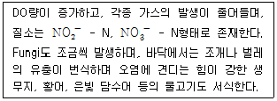
- 분해지대
- 활발한 분해지대
- 회복지대
- 정수지대
(정답률: 65%)
14. 해수의 특성에 관한 설명으로 옳지 않은 것은?
- 해수의 밀도는 1.5∼1.7g/cm3 정도로 수심이 깊을수록 밀도는 감소한다.
- 해수는 강전해질이다.
- 해수의 Mg/Ca비는 3∼4 정도이다.
- 염분은 적도해역보다 남·북극의 양극해역에서 다소 낮다.
(정답률: 80%)
15. 수중에 존재하는 유기체에 관한 설명으로 가장 거리가 먼 것은?
- 청-녹조류는 섬유상이나 군락상의 단세포로 나타나며, 표면수의 온도가 높은 더운 늦여름에는 특히 많다.
- 녹조류는 단세포와 다세포가 있으며, 비운동성이 있는가 하면 유영편모를 갖춘 것도 있다.
- 균류는 박테리아보다는 산성조건과 더 건조한 환경에서 보다 잘 견디며 주로 다세포 식물이다.
- 규조류의 녹유기체는 보통 다세포이며, 주로 군락을 형성하고, 운동성이다.
(정답률: 64%)
16. 시판되고 있는 액상 표백제는 8W/W(%) 하이포아염소산나트륨(NaOCl)을 함유한다고 한다. 표백제 2886mL 중의 NaOCl의 무게(g)는? (단, 표백제의 비중은 1.1이다.)
- 254
- 264
- 274
- 284
(정답률: 75%)
17. 물의 점성과 점성계수에 관한 설명으로 옳지 않은 것은?
- 물의 점성은 분자상호간의 인력 때문에 생기며 충간의 전단응력으로 점성을 나타낸다.
- 점성계수의 단위는 stokes로 나타낸다.
- 점성계수는 온도가 20℃보다 0℃ 일 때 그 값이 크다.
- 동점성계수는 점성계수를 밀도로 나눈 값이다.
(정답률: 53%)
18. 다음은 하천의 수질 모델링에 관한 설명이다. 가장 적합한 모델은?
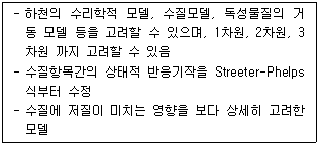
- QUAL-I model
- WORRS model
- QUAL-II model
- WASP5 model
(정답률: 73%)
19. 다음 설명하는 기체확산에 관한 법칙은?
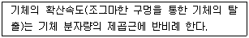
- Dalton의 법칙
- Graham의 법칙
- Gay-Lussac의 법칙
- Charles의 법칙
(정답률: 89%)
20. A시료의 수질분석 결과가 다음과 같을 때 이 시료의 총경도는?
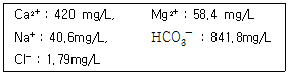
- 525 mg/L as CaCO3
- 646 mg/L as CaCO3
- 1⑤0 mg/L as CaCO3
- 1293 mg/L as CaCO3
(정답률: 57%)
2과목: 수질오염방지기술
21. 다음 중 액체염소의 주입으로 생성된 유리염소, 결합잔류염소의 일반적인 살균력이 순서대로 올게 나열된 것은?(오류 신고가 접수된 문제입니다. 반드시 정답과 해설을 확인하시기 바랍니다.)
- OCl- ＞ HOCl ＞ Chloramines
- OCl- ＞ Chloramines ＞ HOCl
- HOCl ＞ Chloramines ＞ OCl-
- HOCl ＜ OCl- ＞ Chloramines
(정답률: 82%)
22. 하수의 3차 처리 공법인 A/O 공정 중 포기조의 주된 역할을 가장 적합하게 설명한 것은?
- 인의 과잉섭취
- 질소의 탈기
- 탈질
- 인의 방출
(정답률: 67%)
23. 우리나라 표준활성슬러지법의 일반적 설계범위에 관한 설명으로 옳지 않은 것은?
- HRT는 8∼10 시간을 표준으로 한다.
- MLSS는 1500∼2500mg/L를 표준으로 한다.
- 포기조(표준식)의 유효수심은 4∼6m를 표준으로 한다.
- 포기방식은 전면포기식, 선회류식, 미세기포 분사식, 수중 교반식 등이 있다.
(정답률: 89%)
24. 300 mg/L의 시안을 함유한 폐수 10m3를 알칼리염소법으로 처리하는데 필요한 이론적인 염소의 양은? (단, 2CN-+5Cl2+4H2O → 2CO2+N2+8HCl+2Cl- 반응식을 이용)
- 20.5 kg
- 26.8 kg
- 32.4 kg
- 46.4 kg
(정답률: 81%)
25. 폐수량 500m3/day, BOD 1000mg/L인 폐수를 살수여상으로 처리하는 경우 여재에 대한 BOD부하를 0.2kg/m3·day로 할 때 여상의 용적은?
- 250 m3
- 500 m3
- 1500 m3
- 2500 m3
(정답률: 75%)
26. 50℃의 폐열수를 50m3/min씩 하천으로 배출하고 있는 시설이 있다. 하천의 유량이 2m3/sec, 수온은 15℃이라면 폐열수가 하천에 완전히 혼합되었을 경우 수온은?
- 16.7℃
- 19.4℃
- 22.6℃
- 25.3℃
(정답률: 61%)
27. 고도 수처리에 사용되는 분리막에 관한 설명으로 옳은 것은?
- 정밀여과의 막형태는 대칭형 다공성막이다.
- 한외여과의 구동력은 농도차이다.
- 역삼투의 분리형태는 pore size 및 흡착현상에 기인한 체걸름이다.
- 투석의 구동력은 전위차이다.
(정답률: 64%)
28. BOD5 가 85mg/L인 하수가 완전혼합 활성슬러지공정으로 처리된다. 유출수의 BOD5 가 15mg/L, 온도 20℃, 유입유량 40,000톤/일, MLVSS가 2,000mg/L, Y값 0.6mgVSS/mgBOD5, Kd값 0.6 d-1, 미생물체류시간 10일이라면 Y 값과 Kd 값을 이용한 반응조의 부피(m3)는?
- 1200 m3
- 1000 m3
- 800 m3
- 600 m3
(정답률: 55%)
29. 유량이 4,000m3/day인 폐수의 BOD와 SS의 농도가 각각 180mg/L이라고 할 때 포기조의 체류시간을 6시간으로 하였다. 포기조 내의 F/M비를 0.4로 하는 경우에 포기조내 MLSS 농도는?
- 1,600 mg/L
- 1,800 mg/L
- 2,000 mg/L
- 2,200 mg/L
(정답률: 84%)
30. SVI=150 일 때, 반송슬러지 농도는?
- 3786g/m3
- 5043g/m3
- 6667g/m3
- 8488g/m3
(정답률: 79%)
31. 고형물의 농도가 16.5%인 슬러지 100kg을 건조상에서 건조시킨 후 수분이 20%로 나타났다. 제거된 수분의 양은? (단, 슬러지 비중 1.0)
- 약 79.4kg
- 약 81.3kg
- 약 83.1kg
- 약 84.7kg
(정답률: 65%)
32. 하수처리에서 자외선 소독의 장점으로 거리가 먼 것은?
- 잔류독성이 없다.
- 대부분의 virus, spores, cysts 등을 비활성화 시키는데 염소보다 효과적이다.
- 안전성이 높고 요구되는 공간이 적다.
- 성공적 소독 여부를 즉시 측정할 수 있다.
(정답률: 85%)
33. 생물막을 이용한 처리공법인 접촉산화법에 관한 설명으로 옳지 않은 것은?
- 분해속도가 낮은 기질제거에 효과적이다.
- 매체에 생성되는 생물량은 부학조건에 의하여 결정된다.
- 미생물량과 영향인자를 정상상태로 유지하기 위한 조작이 어렵다.
- 대규모시설에 적합하고, 고부하시 운전조건에 유리하다.
(정답률: 83%)
34. 정수장의 여과지에서 여과사를 선택할 때 필요한 입도분포에 관한 설명으로 옳지 않은 것은?
- 유효입경은 입도분포도 상에서 제10분위 값이다.
- 균등계수가 클수록 입자는 균일하다.
- 균등계수는 입도분포도 상에서 제60분위 값과 제10분위 값의 비이다.
- 일반적으로 균등계수 1.3 미만으로는 만들기가 어렵다.
(정답률: 53%)
35. NH4+가 미생물에 의해 NO3-로 산화될 때 pH의 변화는?
- 감소한다.
- 증가한다.
- 변화없다.
- 증가하다 감소한다.
(정답률: 84%)
36. 다음 중 시안함유 폐수처리에 사용되는 방법으로 가장 거리가 먼 것은?
- 알칼리 염소법
- 오존 산화법
- 전해법
- 아말감법
(정답률: 65%)
37. 자기조립법(UASB)의 특성으로 가장 거리가 먼 것은?
- 조립시점이 빠르고 인 제거율이 높다.
- 균체를 고농도의 펠렛 모양으로 유지할 수 있다.
- 펠렛이 크게 활성화 된다.
- 고부하 운전이 가능하다.
(정답률: 50%)
38. 중력식 농축조의 형상과 수에 관한 고려사항으로 가장 거리가 먼 것은?
- 슬러저 제거기를 설치하지 않을 경우 탱크바닥의 중앙에 호퍼를 설치하되 호퍼측 벽의 기울기는 수평에 대하여 30℃ 이상으로 한다.
- 농축조의 수는 원칙적으로 2조 이상으로 한다.
- 형상은 원칙적으로 원형으로 한다.
- 슬러지 제거기를 설치할 경우 탱크바닥의 기울기는 5/100 이상이 좋다.
(정답률: 41%)
39. 하수 슬러지의 농축 방법별 장단점으로 옳지 않은 것은?
- 중력식 농축 : 잉여슬러지의 농축에 적합
- 부상식 농축 : 약품 주입 없이도 운전 가능
- 원심분리 농축 : 악취가 적음
- 중력벨트 농축 : 고농도로 농축 가능
(정답률: 50%)
40. 생물학적 회전원판의 지름이 2.6m이며, 600매로 구성되었다. 유입수량이 1000m3/day 이며, BOD 200mg/L 경우 BOD부하(g/m2-day)는? (단, 회전원판은 양면사용 기준)
- 23.6
- 31.4
- 47.2
- 51.6
(정답률: 87%)
3과목: 수질오염공정시험방법
41. 이온전극법에서 사용하는 장치에 관한 설명으로 옳지 않은 것은?
- 저항전위계 또는 이온측정기는 mV 까지 읽을 수 있는 고압력 저항 측정기여야 한다.
- 이온전극은 분석대상 이온에 대한 고도의 선택성이 있다.
- 이온전극은 일반적으로 칼로멜전극 또는 산화은 전극이 사용된다.
- 이온전극은 이온농도에 비례하여 전위를 발생할 수 있는 전극이다.
(정답률: 78%)
42. 측정항목별 시료 보존 방법으로 가장 거리가 먼 것은?
- 페놀류 : H3PO4로 pH 4 이하로 조정한 후 CuSO4 1g/L을 첨가하여 4℃에서 보존한다.
- 노말헥산추출물질 : 10℃ 냉암소에 보관한다.
- 암모니아성 질소 : H2SO4로 pH 2 이하로 하여 4℃에서 보관한다.
- 황산이온 : 6℃ 이하에서 보관한다.
(정답률: 62%)
43. 금속류 분석을 위한 유도결합플라스마-원자발광분광법에서 장치에 관한 설명으로 옳지 않은 것은?
- 분광계는 검출 및 측정방법에 따라 다색화분광기 또는 단색화장치 모두 사용가능해야 하며, 스펙트럼의 띠 통과는 0.⑤nm 미만이어야 한다.
- 분무기는 일반적인 시료의 경우 바빙톤 분무기를 사용하며, 점성이 있는 시료나 입자상 물질이 존재할 경우 동심축 분무기를 사용한다.
- 라디오고주파 발생기는 출력범위 750∼1200W 이상의 것을 사용한다.
- 순도 99.99% 이상 고순도 가스상 또는 액체 아르곤을 사용한다.
(정답률: 40%)
44. 색도측정법(투과율법)에 관한 설명으로 옳지 않은 것은?
- 아담스 - 니컬슨의 색도공식을 근거로 한다.
- 시료 중 백금-코발트 표준물질과 아주 다른 색상의 폐·하수는 적용할 수 없다.
- 색도의 측정은 시각적으로 눈에 보이는 색상에 관계없이 단순 색도차 또는 단일 색도차를 계산한다.
- 시료 중 부유물질은 제거하여야 한다.
(정답률: 81%)
45. 다음은 자외선/가시선 분광법에 의한 페놀류 측정원리를 설명한 것이다. ( )안에 알맞은 것은?
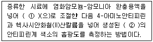
- ① pH 4, ② 푸른색
- ① pH 4, ② 붉은색
- ① pH 10, ② 푸른색
- ① pH 10, ② 붉은색
(정답률: 47%)
46. 식물성 플랑크톤(조류)을 현미경계수법으로 분석하고자 할 때 분석시료 조제에 관한 설명으로 옳지 않은 것은?
- 시료의 개체수는 계수 면적당 50∼75 정도가 되도록 조정한다.
- 시료가 육안으로 녹색이나 갈색으로 보일 경우 정제수로 적절한 농도로 희석한다.
- 시료 농축방법으로는 원심분리방법과 자연침전법이 있다.
- 자연침전법은 일정시료에 포르말린 용액 또는 루골용액을 가하여 플랑크톤을 고정시켜 실린더 용기에 넣고 일정시간 정치 후 싸이폰을 이용하여 상등액을 따라내어 일정량으로 농축한다.
(정답률: 58%)
47. 자외선/가시선 분광법에 의한 시안 분석 시 측정파장으로 옳은 것은?
- 460nm
- 510nm
- 540nm
- 620nm
(정답률: 75%)
48. 냉증기-원자흡수분광광도법으로 수은을 측정시 시료 내 벤젠, 아세톤 등 휘발성 유기물질을 제거하는 방법으로 가장 적합한 것은?
- 질산 분해 후 헥산으로 추출분리
- 중크롬산칼륨 분해 후 헥산으로 추출분리
- 과망간산칼륨 분해 후 헥산으로 추출분리
- 묽은 황산으로 가열 분해 후 헥산으로 추출분리
(정답률: 58%)
49. 수로 및 직각 3각 위어판을 만들어 유량을 산출할 때 위어의 수두 0.2m, 수로의 밑면에서 절단 하부점까지의 높이 0.75m, 수로의 폭 0.5m일 때의 위어의 유량은? (단,
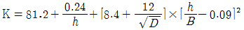
이용)- 약 30 m3/hr
- 약 60 m3/hr
- 약 90 m3/hr
- 약 120 m3/hr
(정답률: 74%)
50. 최대 유량이 1m3/분 미만인 경우, 용기에 의한 유량측정에 관한 설명으로 옳지 않은 것은?
- 용기는 용량 50L ∼ 100L 인 것을 사용한다.
- 용기에 물을 받아 넣는 시간을 20초 이상이 되도록 용량을 결정한다.
- 60 ×
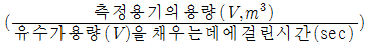
을 유량(m3/분)으로 한다. - 유수를 채우는 데에 요하는 시간은 스톱워치로 잰다.
(정답률: 69%)
51. 총질소를 자외선/가시선 분광법-산화법으로 분석할 때에 관한 설명으로 옳지 않은 것은?
- 비교적 분해하기 어려운 유기물 함유시료에도 적용가능하며, 크롬은 1mg/L 정도에서 영향을 받는다.
- 시료 중 질소화합물을 알칼리성 과황산칼륨을 사용하여 120℃ 부근에서 유기물과 함께 분해하여 질산이온으로 산화시킨다.
- 해수와 같은 시료에는 적용할 수 없다.
- 질산이온으로 산화시킨 후 산성상태로 하여 흡광도를 220nm에서 측정한다.
(정답률: 43%)
52. 불소를 자외선/가시선 분광법으로 분석할 때에 관한 설명으로 옳은 것은?
- 염소이온이 다량 함유되어 있는 시료는 증류전 아황산나트륨을 가하여 제거한다.
- 알루미늄 및 철은 증류해도 방해가 크다.
- 정량한계는 0.15mg/L 이다.
- 적색의 복합 화합물의 흡광도를 540nm에서 측정한다.
(정답률: 50%)
53. 총인을 자외선/가시선 분광법으로 분석할 때 측정파장으로 옳은 것은?
- 460nm
- 540nm
- 620nm
- 880nm
(정답률: 43%)
54. 이온크로마토그래피법을 정량분석에 이용하는 성분과 가장 거리가 먼 것은?
- Br-
- NO3-
- Fe-
- SO42-
(정답률: 85%)
55. 긴 관의 일부로써 단면이 작은 목 부분과 점점 축소, 점점 확대되는 단면을 가진 관으로 축소부분에서 정역학적 수두의 일부는 속도수두로 변하게 되어 관의 목부분의 정역학적 수두보다 적어지는 이러한 차에 의해 직접적으로 유량을 측정하는 것은?
- 벤튜리미터
- 피토관
- 자기식 유량측정기
- 오리피스
(정답률: 61%)
56. 다음은 아연의 자외선/가시선 분광법에 관한 설명이다. ( )안에 알맞은 것은?
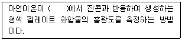
- pH 약 2
- pH 약 4
- pH 약 9
- pH 약 12
(정답률: 78%)
57. 다음 중 질산성질소 측정방법과 가장 거리가 먼 것은? (단, 수질오염공정시험기준)
- 이온크로마토그래피법
- 카드뮴환원법
- 자외선/가시선 분광법-부루신법
- 데발다합금 환원증류법
(정답률: 60%)
58. 수질오염공정시험기준총칙 중 온도에 관한 설명으로 옳지 않은 것은?
- 냉수는 4℃ 이하로 한다.
- 온수는 60∼70℃ 로 한다.
- 상온은 15∼25℃ 로 한다.
- 실온은 1∼35℃ 로 한다.
(정답률: 79%)
59. 노말헥산 추출물질 시험방법에 관한 설명으로 올지 않은 것은?
- 시료를 pH 4 이하의 산성으로 하여 노말헥산으로 추출 한 후 약 80℃에서 노말헥산을 휘산시켰을 때 잔류하는 유류 등의 측정을 행한다.
- 수중에서 비교적 휘발되지 않는 탄화수소, 탄화수소유도체, 그리이스유상물질 등이 노말헥산층에 용해되는 성질을 이용한 방법이다.
- 시료용기는 폴리에틸렌 용기를 사용한다.
- 최종 무게 측정을 방해할 가능성이 있는 입자가 존재할 경우 0.45㎛ 여과지로 여과한다.
(정답률: 62%)
60. 호소나 하천에서의 투명도 측정방법에 관한 설명으로 옳지 않은 것은?
- 날씨가 맑고 수면이 잔잔할 때 투명도 판이 잘 보이도록 배의 그늘을 피하여 직사광선에서 측정한다.
- 투명도 판은 무게가 약 3kg인 지름 30cm의 백색 원판에 지름이 5cm의 구멍 8개가 뚫린 것이다.
- 투명도 판을 조용히 수중에 보이지 않는 깊이로 넣은 다음 천천히 끓어 올리면서 보이기 시작한 깊이를 0.1m 단위로 읽어 측정한다.
- 흐름이 있어 줄이 기울어질 경우에는 2kg 정도의 추를 달아서 줄을 세운다.
(정답률: 64%)
4과목: 수질환경관계법규
61. 다음 수질오염 방지시설 중 화학적 처리시설은?
- 응집시설
- 흡착시설
- 폭기시설
- 접촉조
(정답률: 65%)
62. 대권역계획에 포함되어야 하는 사항과 가장 거리가 먼 것은?
- 재원조달 및 집행계획
- 상수원 및 물 이용현황
- 점오염원, 비점오염원 및 기타 수질오염원의 분포현황
- 점오염원, 비점오염원 및 기타 수질오염원에 의한 수질오염물질 발생량
(정답률: 77%)
63. 용어의 정의로 옳지 않은 것은?
- 비점오염원 : 불특정 장소에서 불특정하게 수질오염물질을 배출하는 시설 및 장소로 환경부령으로 정하는 것
- 강우유출수 : 비점오염원의 수질오염물질이 섞여 유출되는 빗물 또는 눈녹은 물 등을 말한다.
- 수면관리자 : 다른 법령의 규정에 의하여 호소를 관리하는 자를 말한다. 이 경우 동일한 호소를 관리하는 자가 2 이상인 경우에는 하천법에 의한 하천의 관리청외의 자가 수면관리자가 된다.
- 폐수 : 물에 액체성 또는 고체성의 수질오염물질이 혼입되어 그대로 사용할 수 없는 물을 말한다.
(정답률: 67%)
64. 환경부장관은 배출시설을 설치·운영하는 사업자에 대하여 공익 등에 현저한 지장을 초래할 우려가 있다고 인정되는 경우 조업정지처분에 갈음하여 과징금을 부과할 수 있는데 이 경우와 가장 거리가 먼 것은?
- 의료법에 의한 의료기관의 배출시설
- 발전소의 발전설비
- 제조업의 배출시설
- 공공사업에 의한 공공기관의 배출시설
(정답률: 84%)
65. 오염총량목표수질 달성을 위한 총량관리 단위유역 하단지점의 수질을 측정할 경우 오염총량목표수질이 설정된 지점별로 얼마간 측정하여야 하는가? (단, 특정한 사항 등은 제외)
- 월간 1회 이상
- 월간 2회 이상
- 연간 25회 이상
- 연간 30회 이상
(정답률: 48%)
66. 기본배출부과금 산정 시 “가” 지역의 지역별 부과계수로 옳은 것은?
- 1
- 1.2
- 1.3
- 1.5
(정답률: 64%)
67. 수질 및 수생태계 환경기준에서 호소의 생활환경 기준 중 약간나쁨(Ⅳ) 등급의 클로로필-a(mg/m3) 기준은?
- 9 이하
- 14 이하
- 35 이하
- 70 이하
(정답률: 38%)
68. 하천의 수질 및 수생태계 환경기준 중 음이온계면 활성제(ABS) 기준(mg/m3)으로 옳은 것은?(단, 사람의 건강보호 기준)
- 0.02 이하
- 0.03 이하
- 0.04 이하
- 0.5 이하
(정답률: 60%)
69. 시장, 군수, 구청장(자치구의 구청장을 말한다.)이 낚시금지구역 또는 낚시제한구역을 지정하려는 경우에 고려하여야 하는 사항으로 가장 거리가 먼 것은?
- 수질오염도
- 서식 어류의 종류 및 양 등 수중 생태계의 현황
- 낚시터 발생 쓰레기가 인근 환경에 미치는 영향
- 연도별 낚시 인구의 현황
(정답률: 67%)
70. 낚시금지구역 또는 낚시제한구역 안내판의 규격 중 색상기준으로 옳은 것은?
- 바탕색 : 녹색, 글씨 : 회색
- 바탕색 : 녹색, 글씨 : 흰색
- 바탕색 : 청색, 글씨 : 회색
- 바탕색 : 청색, 글씨 : 흰색
(정답률: 100%)
71. 오염총량초과부과금 납부통지를 받은 자는 그 납부통지를 받은 날부터 얼마이내에 환경부장관 등에게 오염총량초과부과금 조정을 신청할 수 있는가?
- 7일 이내에
- 10일 이내에
- 30일 이내에
- 60일 이내에
(정답률: 69%)
72. 수질오염물질 희석처리의 인정을 받고자 하는 자가 규정에 의한 신청서 또는 신고서를 제출할 때 첨부하여야 하는 자료와 가장 거리가 먼 것은?
- 처리하려는 폐수의 농도 및 특성
- 희석처리의 불가피성
- 희석배율 및 희석량
- 희석처리후의 유해 중금속 배출예상농도
(정답률: 62%)
73. 위임업무 보고사항 중 “과징금 징수실적 및 체납처분현황” 의 보고횟수기준은?
- 연 1회
- 연 2회
- 연 4회
- 수시
(정답률: 72%)
74. 공공수역에 특정수질유해물질을 누출·유출시키거나 버린자에 대한 벌칙기준으로 옳은 것은?
- 5년 이하의 징역 또는 3천만원 이하의 벌금
- 3년 이하의 징역 또는 1천500만원 이하의 벌금
- 1년 이하의 징역 또는 1천만원 이하의 벌금
- 500만원 이하의 벌금
(정답률: 49%)
75. 폐수배출사업자 또는 수질오염방지시설 운영자는 폐수배출시설 및 수질오염방지시설의 가동시간, 폐수배출량 등을 매일 기록한 운영일지를 최종기록일부터 얼마간 보존(기준)하여야 하는가? (단, 폐수무방류배출시설이 아님)
- 1년간 보존
- 2년간 보존
- 3년간 보존
- 5년간 보존
(정답률: 46%)
76. 배출부과금을 부과할 때 고려하여야 하는 사항과 가장 거리가 먼 것은?
- 수질오염물질의 배출기간
- 배출되는 수질오염물질의 종류
- 배출시설 규모
- 배출허용기준 초과 여부
(정답률: 80%)
77. 폐수의 처리능력과 처리가능성을 고려하여 수탁하여야 하는 준수사항을 지키지 아니한 폐수처리업자에 대한 벌칙기준은?
- 3년 이하의 징역 또는 3천만원 이하의 벌금
- 2년 이하의 징역 또는 2천만원 이하의 벌금
- 1년 이하의 징역 또는 1천만원 이하의 벌금
- 5백만원 이하의 벌금
(정답률: 42%)
78. 환경부장관이 폐수처리업자의 등록을 취소할 수 있는 경우와 가장 거리가 먼 것은?
- 파산선고를 받고 복권되지 아니한 자
- 거짓이나 그 밖의 부정한 방법으로 등록한 경우
- 등록 후 1년 이내에 영업을 개시하지 아니하거나 계속하여 1년 이상 영업실적이 없는 경우
- 대기환경보전법을 위반하여 징역의 실형선고를 받고 그 형의 집행이 종료되거나 집행을 받지 아니하기로 확정된 후 2년이 경과되지 아니한 자
(정답률: 91%)
79. 다음 중 기타 수질오염원의 대상시설과 규모기준으로 옳지 않은 것은?
- 운수장비 정비 또는 폐차장 시설 중 자동차 폐차장시설로서 면적이 1천 500제곱미터 이상일 것
- 농축수산물 단순가공시설 중 1차 농산물을 물세척만 하는 시설로서 물사용량이 1일 3세제곱미터 이상일 것
- 농축수산물 단순가공시설 중 조류의 알을 물세척만 하는 시설로서 물사용량이 1일 5세제곱미터 이상일 것
- 체육시설의 설치·이용에 관한 법률 시행령 발표1에 따른 골프장시설로서 면적이 3만 제곱미터 이상이거나 3홀 이상일 것
(정답률: 63%)
80. 다음 중 방류수수질 기준초과율 산정공식으로 옳은 것은?
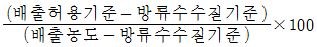
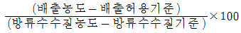
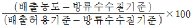
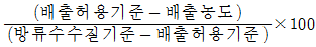
(정답률: 68%)
Ca(OH)2의 몰 질량은 74.1 g/mol입니다. 따라서 690 mg/L의 농도는 0.0093 mol/L입니다. 이때, Ca(OH)2는 완전해리하므로, Ca2+와 OH- 이온의 농도는 모두 0.0186 mol/L입니다.
OH- 이온의 농도를 이용하여 pH를 계산하면,
pOH = -log[OH-] = -log(0.0186) = 1.73
pH = 14 - pOH = 14 - 1.73 = 12.27
따라서, Ca(OH)2 690mg/L 용액의 pH는 "약 12.3"입니다.